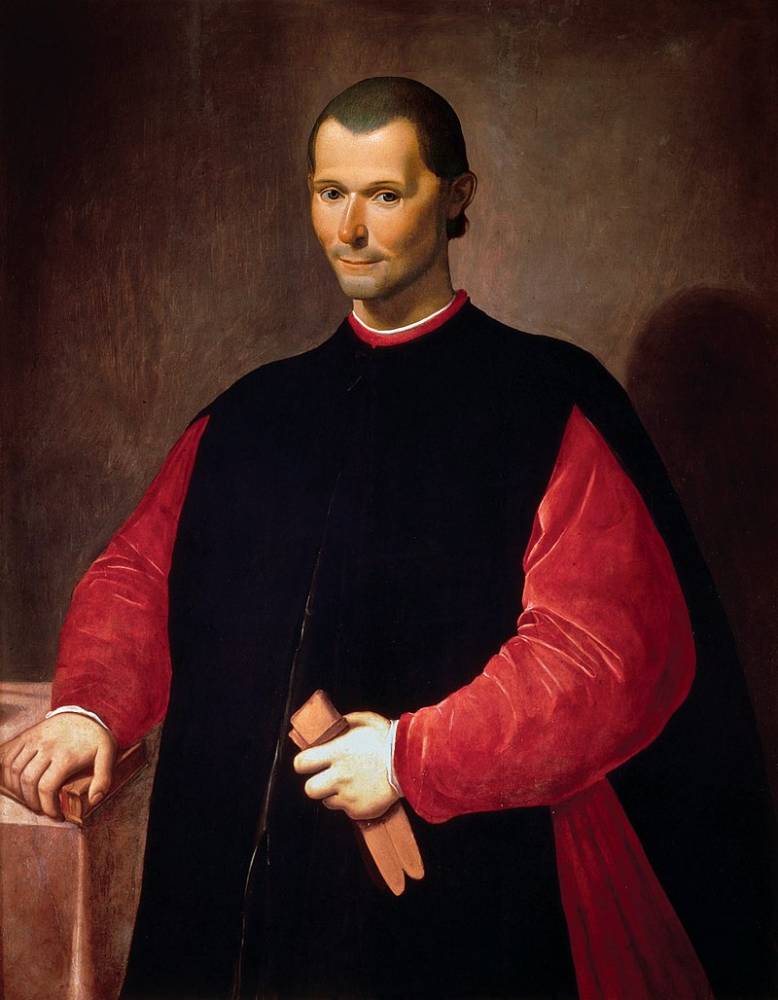

Literatura renacentista
¿Qué es la literatura renacentista?
La literatura renacentista o literatura del Renacimiento es el conjunto de la vasta y variada producción literaria que se inserta en el período de la cultura occidental conocido como el Renacimiento, que tuvo lugar entre los siglos XV y XVI.
La literatura renacentista figura entre las más importantes, centrales y trascendentes de la historia de Occidente, y muchos de sus autores son hoy en día clásicos. Su difusión fue posible gracias a la invención de la imprenta hacia 1450, la aparición de las lenguas vernáculas, y el debilitamiento de la Iglesia Católica, fruto del advenimiento de la burguesía.
Por otro lado, la literatura renacentista presenció el nacimiento de nuevos géneros literarios, como el ensayo y la novela. Además, surgieron nuevos modelos de métrica poética (como el soneto, con predominancia del endecasílabo).
Características de la literatura renacentista
La literatura renacentista se caracterizó por lo siguiente:
- Surgió en los siglos XV y XVI, pero tuvo sus primeras manifestaciones en la Italia del siglo XIII y XIV, con las figuras de Dante Alighieri (1265-1321), Francesco Petrarca (1304-1374) y Giovanni Bocaccio (1313-1375).
- Presenció la reaparición de los motivos clásicos grecorromanos, así como de la concepción del arte imitativo que Aristóteles desarrolla en su Poética. El predominio de la religión como tema cede terreno de manera significativa.
- Surgieron nuevos géneros, nuevas formas de la métrica y nuevos temas, influenciados por la filosofía del humanismo.
- Los principales países en que se desarrolló una obra literaria renacentista fueron Italia, Alemania, Holanda, España, Portugal, Francia e Inglaterra.
Temas de la literatura renacentista
El Renacimiento trajo consigo la revalorización de la antigüedad grecolatina y de su vasta mitología, de modo que muchos de sus motivos narrativos y poéticos comenzaron a reaparecer en la literatura occidental, luego de haber sido ignorados durante el Medioevo.
El individualismo y la fe en la razón eran las ideas filosóficas detrás de muchos textos de la época, lo cual en parte se debía a que muchos de los nuevos autores habían podido tener una educación clásica, en lugar de una estrictamente religiosa.
Estos cambios se vieron reflejados en la frecuente interrogación existencial de los personajes literarios, como es el caso de Don Quijote, o bien en la ironía y la sátira tan frecuentes en el teatro de Shakespeare, o incluso en la imaginación de sociedades distintas a la real.
El debilitamiento de la Iglesia Católica permitió, por último, que muchos autores escribieran críticas y sátiras anticlericales, lo cual tuvo una influencia determinante (aunque en algunos casos involuntaria) en el surgimiento de la Reforma Protestante de Lutero.
Géneros de la literatura renacentista
En la literatura renacentista se cultivaron diversos géneros:
- La lírica. El género más cultivado durante el Renacimiento fue la poesía, que vivió una renovación de formas importante, a partir de la influencia de los autores italianos. En este género, además, apareció una ramificación de índole religiosa, conocida como poesía mística o poesía ascética, las cuales eran dos corrientes de un mismo deseo de aproximarse poéticamente a la experiencia de lo sagrado.
- La novela moderna. El gran género nacido en el seno del Renacimiento fue la novela moderna, cuyo primer texto fue El Quijote de Cervantes. Este género cobró popularidad en los siglos posteriores y se instaló, de manera paulatina, como el gran género moderno que Europa perfeccionó y exportó a todas las latitudes.
- La dramaturgia. Muchas de las grandes obras renacentistas están escritas para ser representadas en un teatro. Esto se debió a que el teatro era la gran forma de comunicación masiva heredada de tiempos anteriores, y una que no exigía del público mayormente analfabeto la capacidad de leer. Por eso las grandes obras de Shakespeare o del Siglo de oro español, eran piezas teatrales.
Autores y representantes de la literatura renacentista
Algunos de los principales autores de la literatura del Renacimiento fueron:
- Miguel de Cervantes (1547-1616). Novelista, poeta, soldado y dramaturgo, es el célebre autor de El Quijote y las Novelas ejemplares, y la máxima figura de las letras hispánicas. Se le conocía popularmente como el Manco de Lepanto, por haber perdido el uso de una mano durante dicha batalla.
- William Shakespeare (1564-1616). El máximo autor de las letras anglosajonas, fue un dramaturgo, poeta y actor inglés, conocido como el Bardo de Avon. Es quizá uno de los autores más célebres y apreciados del mundo entero, cuyas obras ocupan un lugar central en la cultura occidental contemporánea.
- Nicolás Maquiavelo (1469-1527). Diplomático, filósofo y escritor italiano, fue una figura intelectual relevante en el Renacimiento y se le considera el padre de la ciencia política, por su libro de reflexiones en torno al poder El príncipe. 
- Erasmo de Róterdam (1466-1536). Un gran humanista y filólogo neerlandés, cultivó una extensa obra ensayística, de cartas y tratados, que tuvo una influencia verdaderamente revolucionaria en toda Europa. Gracias a él, de hecho, se traduce por primera vez el Nuevo Testamento al inglés y al alemán.


Obras de la literatura renacentista
Asimismo, algunas de las obras más populares del Renacimiento fueron:
- Elogio de la locura (1511) de Erasmo de Róterdam.
- La celestina (1514) de Fernando de Rojas (originalmente publicada bajo el nombre de Tragicomedia de Calisto y Melibea).
- El príncipe (1532) de Nicolás Maquiavelo.
- Gargantúa y Pantagruel (1534) de François Rebelais.
- El lazarillo de Tormes (1554) de autor anónimo.
- Los lusiadas (1572) de Luís de Camões.
- Ensayos (1580) de Michel de Montaigne
- Romeo y Julieta (1595) de William Shakespeare.
- El ingenioso hidalgo Don Quijote de la Mancha (1605) de Miguel de Cervantes.
 de Erasmo de Róterdam..jpg)
 de Fernando de Rojas.jpg)
 de Nicolás Maquiavelo..jpg)
 de François Rebelais..jpg)
 de autor anónimo..jpg)
 de Luís de Camões..jpg)
 de Michel de Montaigne.png)
 de William Shakespeare..jpg)
 de Miguel de Cervantes.png)